السلسلة 117
السيارة (صنف B) · 40 سؤال بالصوت. حاول تجاوب بوحدك، من بعد شوف الجواب.
السؤال 1
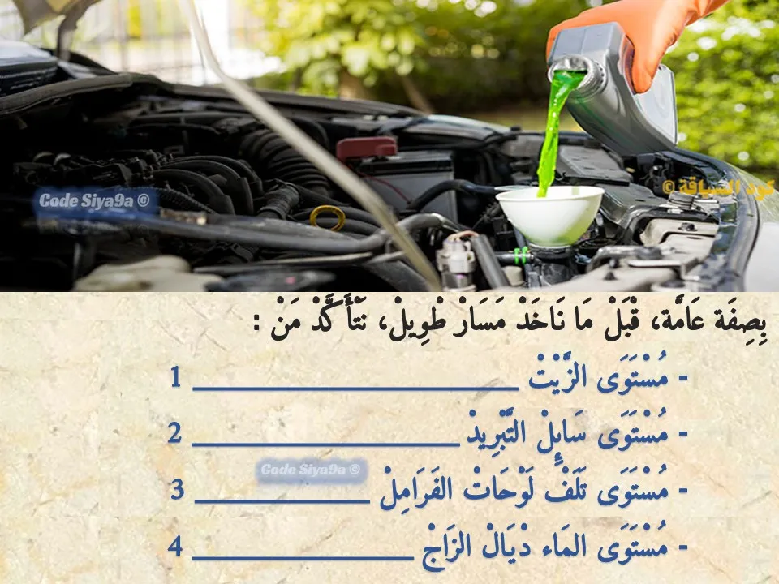
بيّن الجواب
الجواب الصحيح: 1 و 2 و 4
صفه عامه قبل ما ناخذ مسار طويل نتاكد:
✅ من مستوى الزيت اللي ضروري باش يخدم المحرك.
✅ مستوى سائل التبريد. ويكون معي سائل احتياطي.
✅ مستوى ماء ديال الزاج. وايضا يكون معي احتياطي
السؤال 2
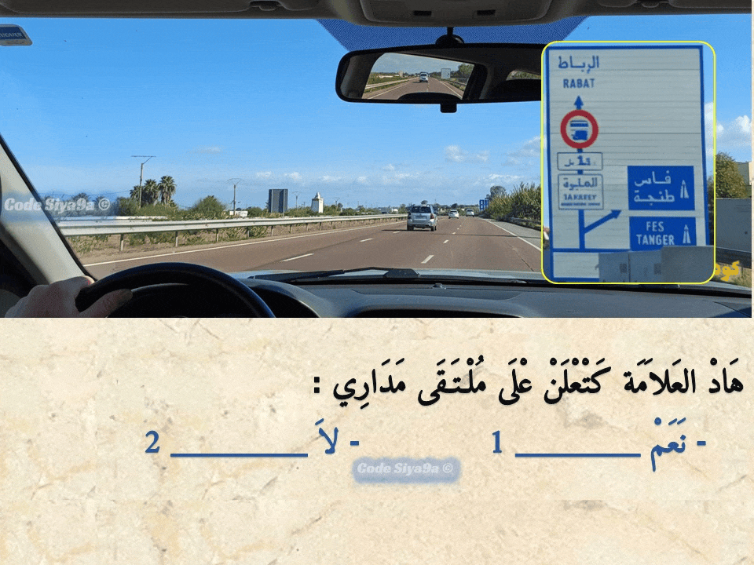
بيّن الجواب
الجواب الصحيح: 2
تَشْوِيرِ مُسْبَقَ لِلْتَقَى طُرُق
كَتْعْلَن هَادِ الْعَلَامَةِ عَلَى تَشْوِيرِ مُسْبَق لمُلْتَقَى طرق مع الإشارة لاتجاه الطريق السيار
السؤال 3
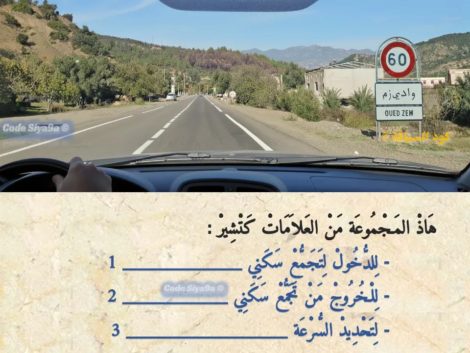
بيّن الجواب
الجواب الصحيح: 1 و 3
هذه المجموعه ديال العلامات:
- العلامه باللون الابيض فيها اسم ديال المكان. غادي ندخل للتجمع سكني.
- علامه باللون الاحمر هي علامه ديال المنع كاتمنع السير ب اكثر من 60 كلم في الساعه
السؤال 4
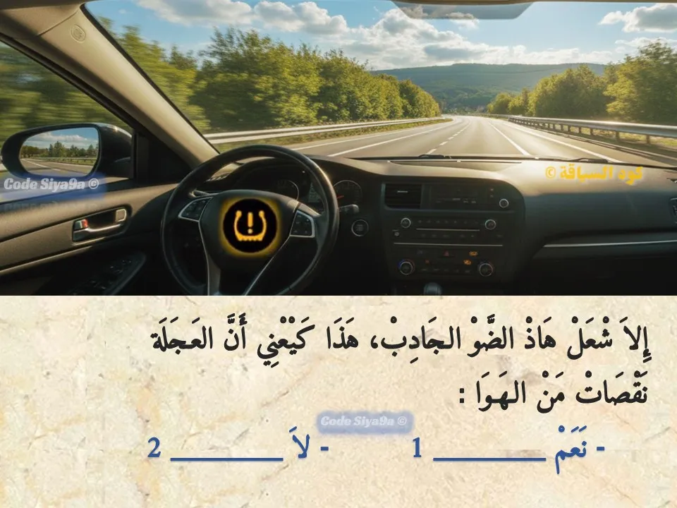
بيّن الجواب
الجواب الصحيح: 1
هذا الضوء الجديد لشعل كيعني ان العجلات نقصت من الهواء.
السؤال 5
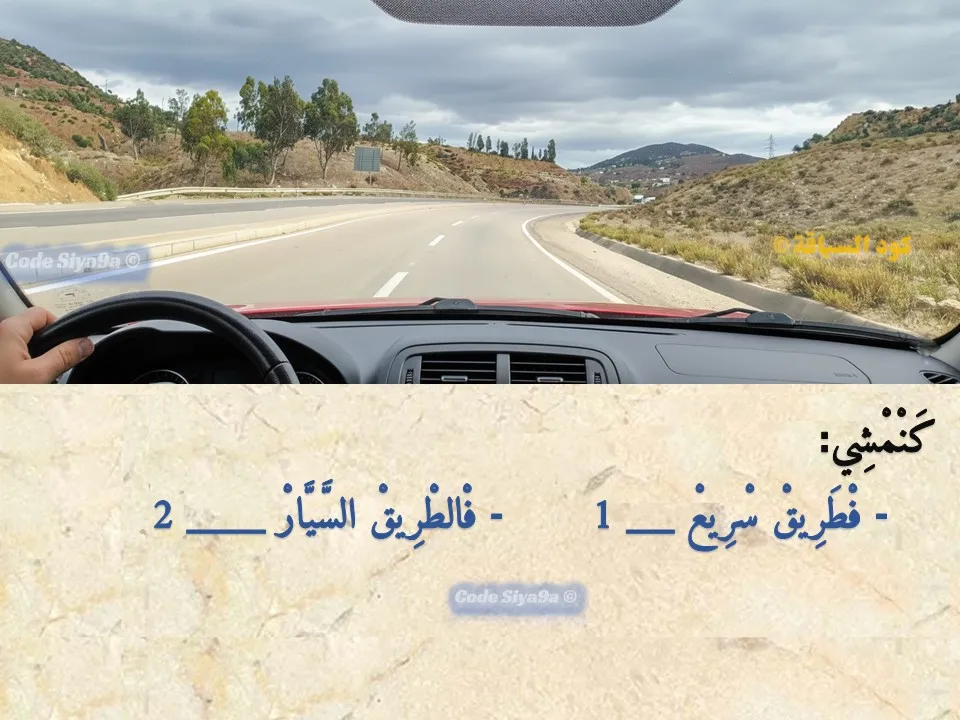
بيّن الجواب
الجواب الصحيح: 1
في هذه الحاله كانمشي في طريق سريع . طريق السريع يشبه من حيث الشكل بالطريق السياره.
- طريق السيارات يكونوا فيه الحواجز بالاضافه الشريط فاصل بين المسلكين.
- في هذه الحاله بين المسلكين كاينه رصيف. يعني كنسير في طريق سريع
السؤال 6
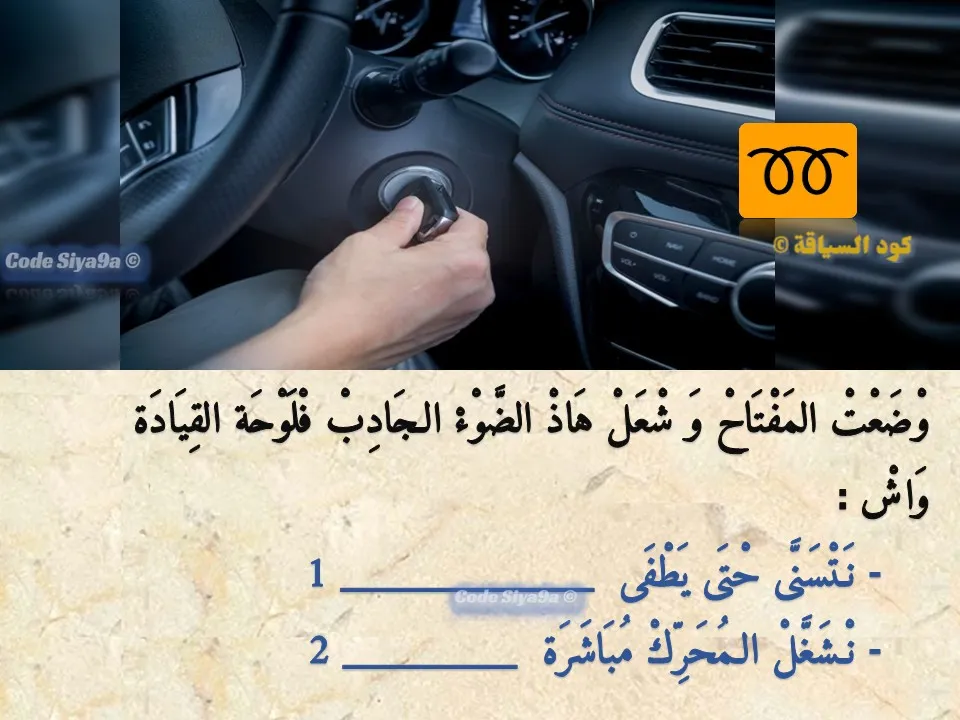
بيّن الجواب
الجواب الصحيح: 1
هل المؤشر كايتعلق بتسخين المحرك قبل التشغيل دياله . كيخبر هذا المؤشر السائق باشتغال نظام التسخيل المحرك.
واجب علي غانتسنى حتى يطفى
السؤال 7
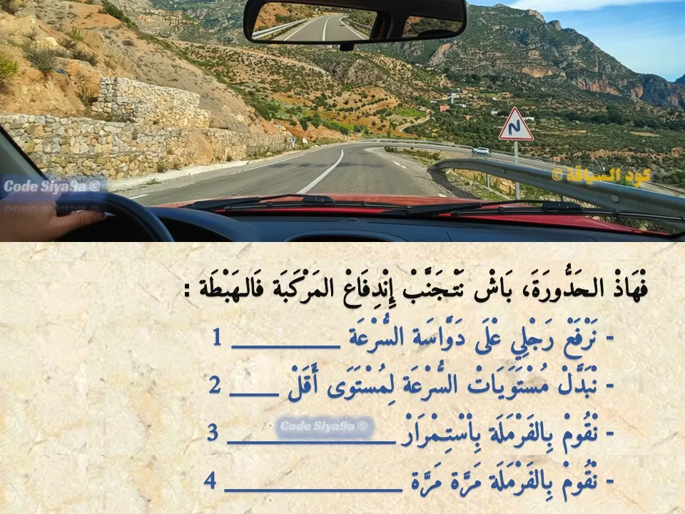
بيّن الجواب
الجواب الصحيح: 1 و 2 و 4
باش نتجنب اندفاع المركبه في هذه الحدوره خاصني نقص من السرعه.
باش نقص من السرعه ، نرفع اولا رجلي على دواسه السرعه ،ثم نقوم بالفرمله مره مره ، و نبدل مستويات سرعه المستوى اقل
السؤال 8
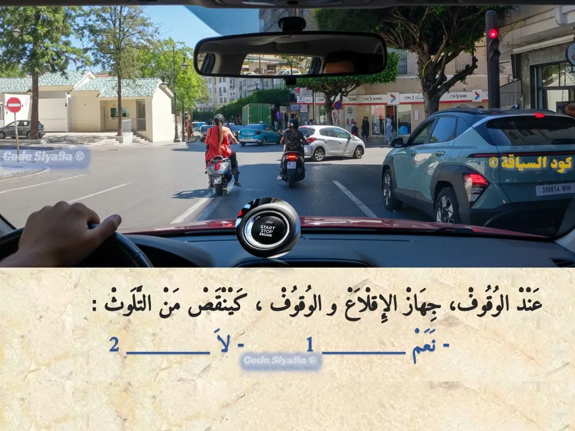
بيّن الجواب
الجواب الصحيح: 1
نظام "الاقلاع والوقوف" هو نظام إلكتروني في السيارات يوقف المحرك تلقائيًا عند التوقف القصير، ثم يعيد تشغيله عند الحاجة لإعادة الحركة. الغرض الرئيسي من هذا النظام هو تقليل استهلاك الوقود وتقليل انبعاثات العادم، خاصة في حركة المرور المزدحمة.
كيف يعمل نظام الإقلاع والوقوف؟
إيقاف المحرك:
عندما تتوقف السيارة، يتوقف المحرك تلقائيًا.
إعادة التشغيل:
عند الضغط على دواسة الوقود أو إعادة تشغيل النظام، يعود المحرك إلى التشغيل.
فوائد نظام الإقلاع والوقوف:
توفير الوقود: تقليل استهلاك الوقود خلال التوقفات.
تقليل الانبعاثات: تخفيض انبعاثات غازات العادم الضارة بالبيئة.
الراحة: تقليل الاهتزازات أثناء التوقف.
الأمان: يمكن أن يمنع النظام من إطفاء المحرك تلقائيًا في حالات الطوارئ.
الأماكن التي يُفضل استخدام نظام الإقلاع والوقوف فيها:
في حركة المرور المزدحمة: عند الوقوف في إشارات المرور أو في حواجز المرور.
عند الانتظار عند المقاهي أو المحلات: عندما تكون السيارة متوقفة لفترات قصيرة.
في حالات الطوارئ: عندما تكون السيارة متوقفة لفترات قصيرة.
إيجابيات وسلبيات نظام الإقلاع والوقوف:
إيجابيات:
توفير الوقود، تقليل الانبعاثات، تحسين الراحة.
السؤال 9
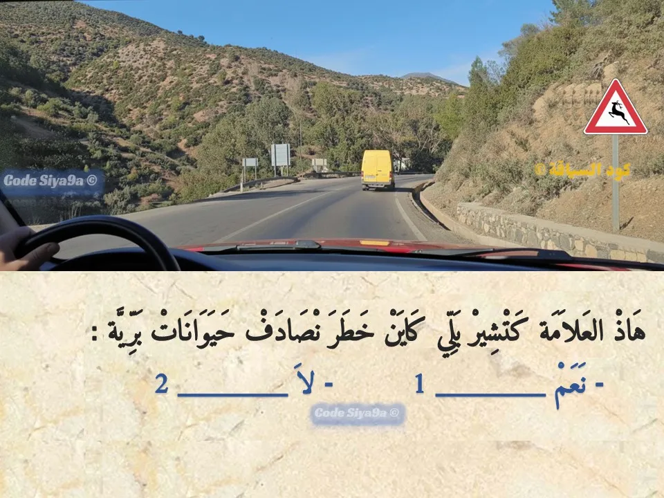
بيّن الجواب
الجواب الصحيح: 1
هذه العلامه كاتشير باللي كاينه خطر نصادف حيوانات بريه على بعد 150 متر.
الواجب نقص من السرعه و ننتبه مزيان في الطريق
السؤال 10
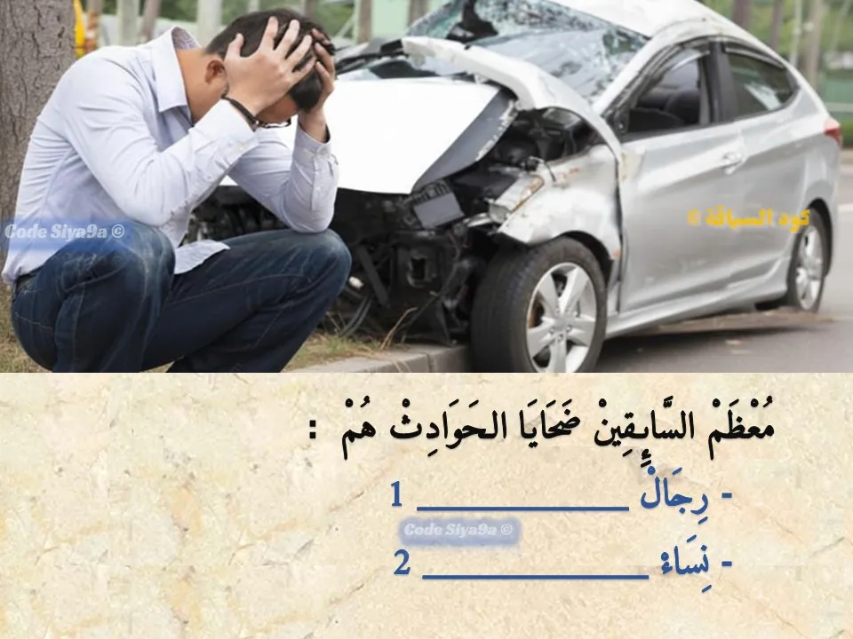
بيّن الجواب
الجواب الصحيح: 1
حسب الاحصائيات معظم سائقين ضحاييل الحوادث كيكونوا رجال
السؤال 11
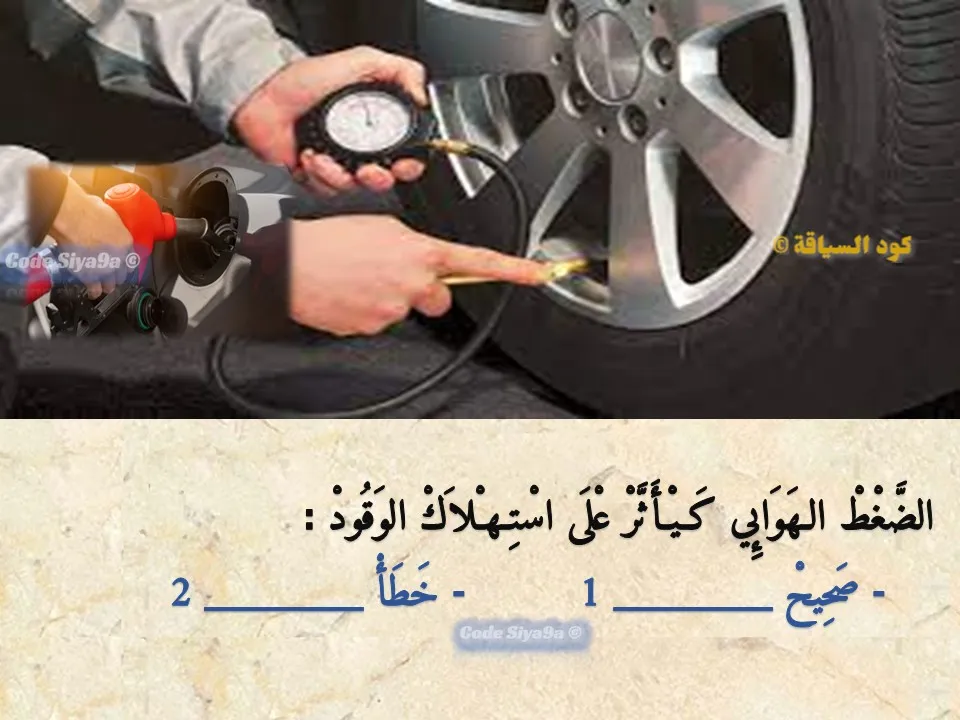
بيّن الجواب
الجواب الصحيح: 1
العجلات الى كانوا ما منفوخينش مزيان كياثروا على استهلاك الوقود.
السؤال 12
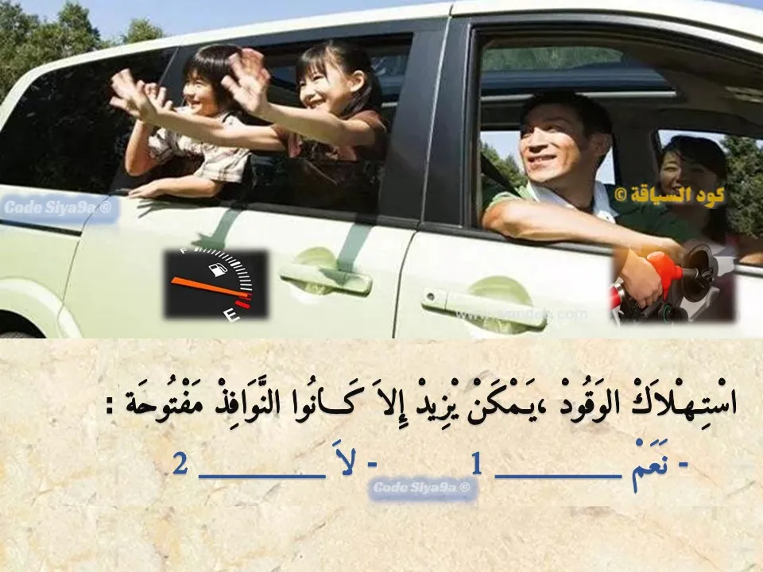
بيّن الجواب
الجواب الصحيح: 1
استهلاك الوقود يمكن يزيد الا كانوا النوافذ مفتوحه. العكس الا كانت النوافذ مسدوده
السؤال 13
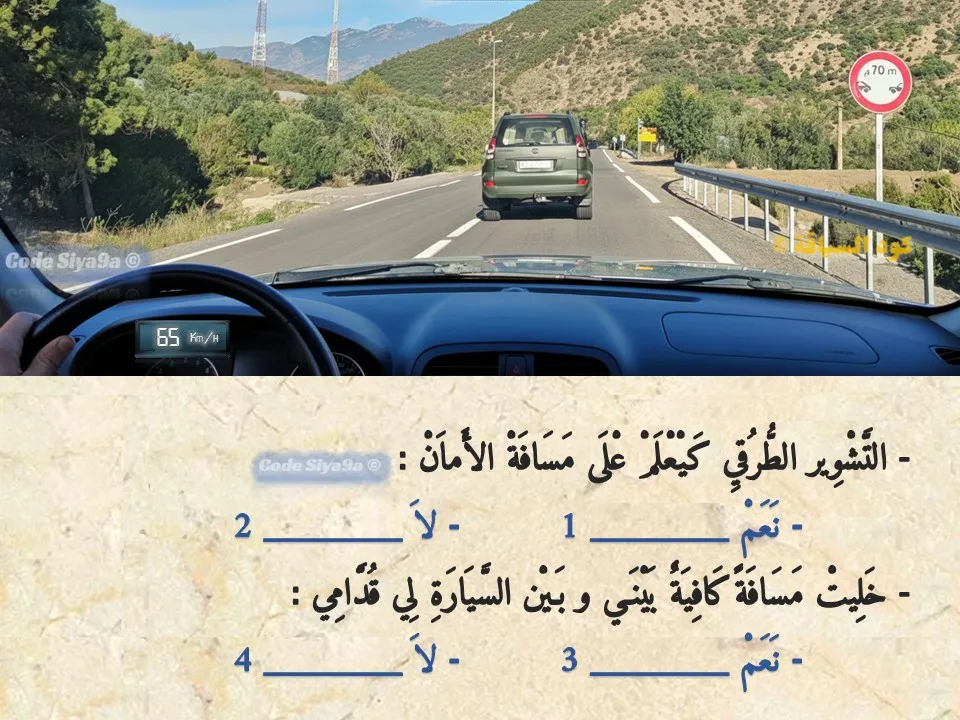
بيّن الجواب
الجواب الصحيح: 1 و 4
هذه العلامه كاتمنع السير بمسافه امان اقل من 70 متر.
في هذه الحاله بيني وبين المركبه اللي قدامي ما خليتش مسافه امان كافيه.
السؤال 14
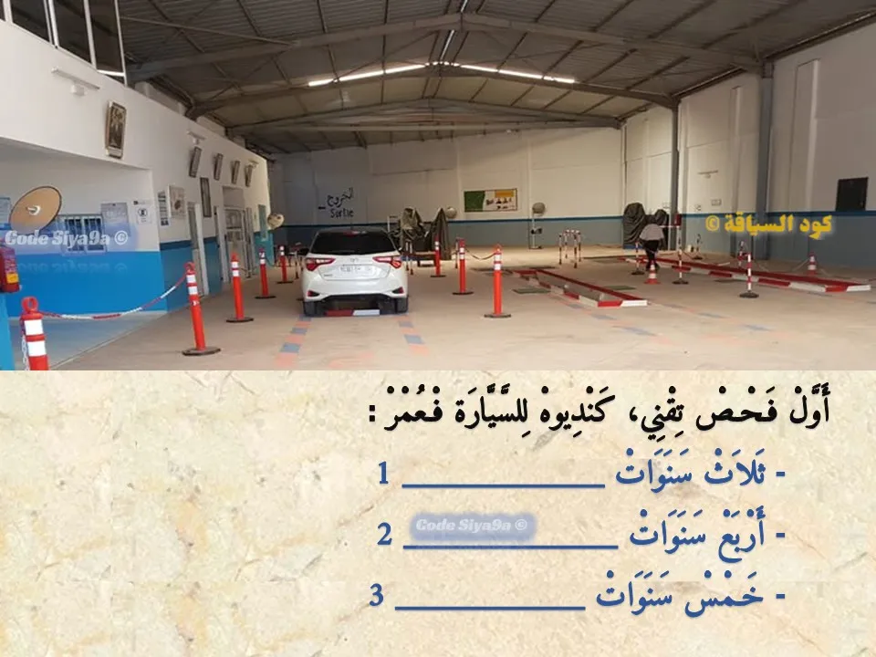
بيّن الجواب
الجواب الصحيح: 3
السياره من بعد خمس سنين ديال استعمال كيصبح اجباري انها تخضع للفحص التقني
السؤال 15
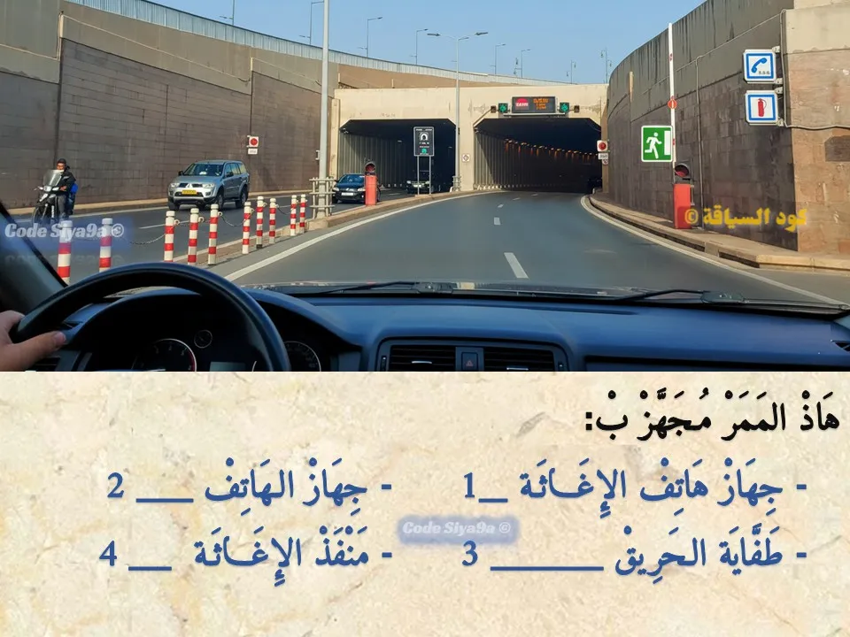
بيّن الجواب
الجواب الصحيح: 1 و 3 و 4
هذه الممر هو عباره عن نفق. كما هو موضح في العلامات. هذا الممر مجهز جهاز هاتف الاغاثه و طفايه ديال الحريق و وكيكون فيه ايضا منفذ الاغاثه.
السؤال 16
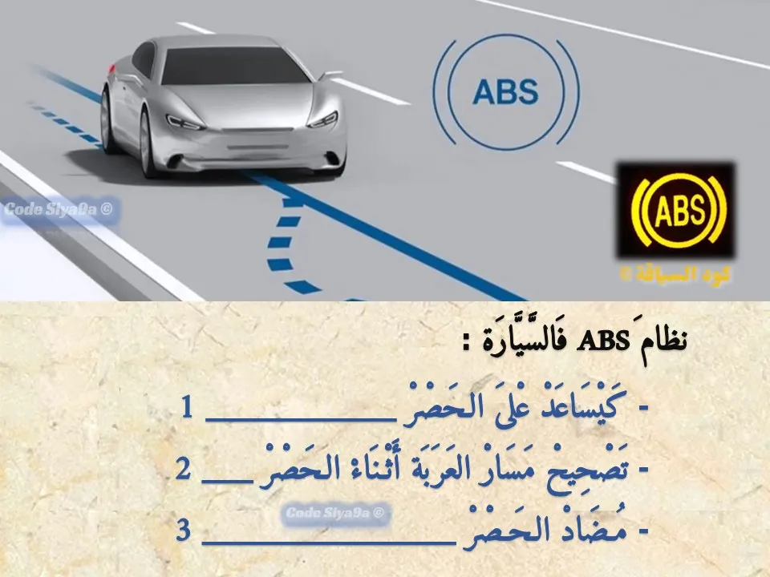
بيّن الجواب
الجواب الصحيح: 2
النظام المضاد لحصر العجلات ABS هو نظام أمان أوتوماتيكي متواجد في بعض المركبات، ويعمل على زيادة تحكّم السّائق في مركبته ومنع انزلاقها، حيث يعمل هذا النّظام بالتّرابط مع مجسّات استشعاريّة مرتبطة مع العجلات، إذ بمجرد استشعار هذه المجسّات لخطر الانزلاق نتيجة لضغط السّائق على دوّاسة الحصر بقوة، فإن نظام ABS يمنع إنزلاق المركبة ويمكن من التحكم فيها.
💡 خلافا لما هو شائع، لا يسمح نظام ABS من تقليص مسافة الحصر.
السؤال 17
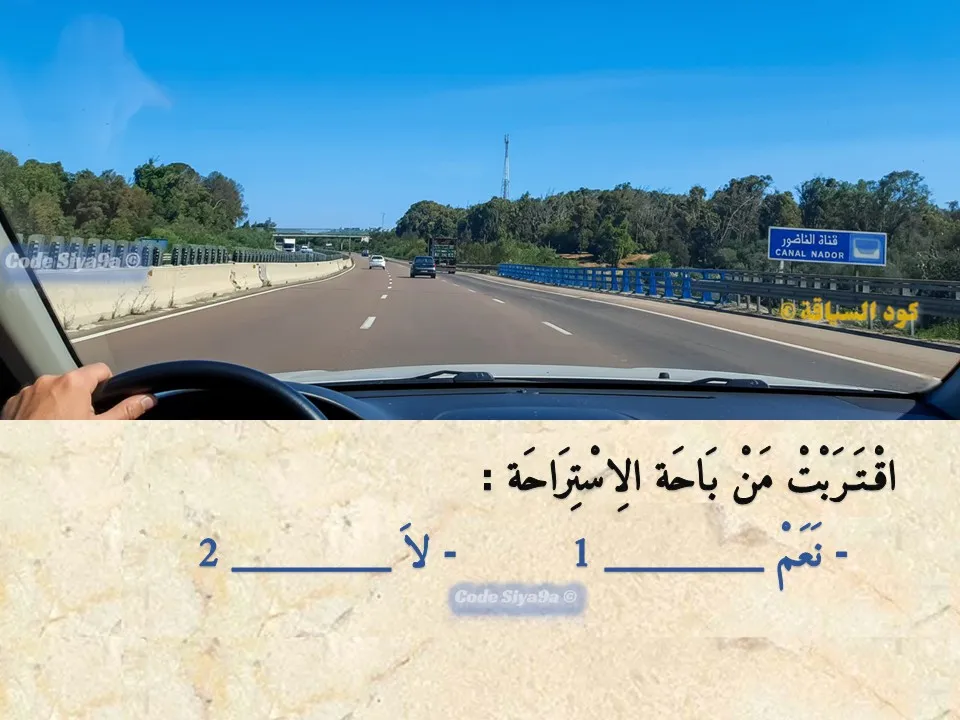
بيّن الجواب
الجواب الصحيح: 2
هذه العلامه ديال الارشاد كتعلم لا تواجد قناه مائيه يعني مجرى مياه
السؤال 18
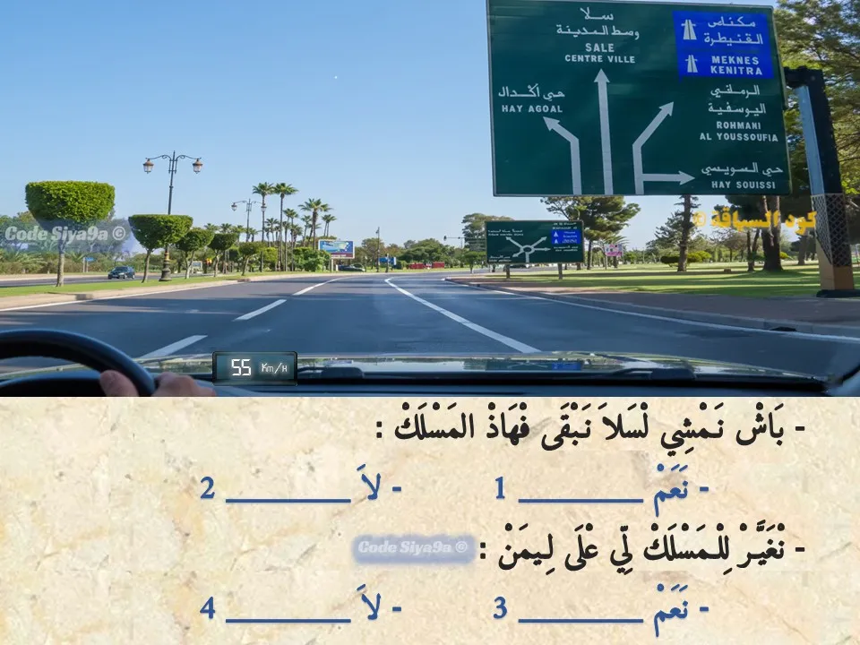
بيّن الجواب
الجواب الصحيح: 1 و 4
تصوير الطرقي كايعلم على تحديد المسالك.
✅كما هو مبين في اللوحه المس لك رقم جوج اللي انا فيه كيمكنني باش انني نمشي لسلا وسط المدينه. وما كاينش الضروره باش نغير المسلك لليمين.
السؤال 19
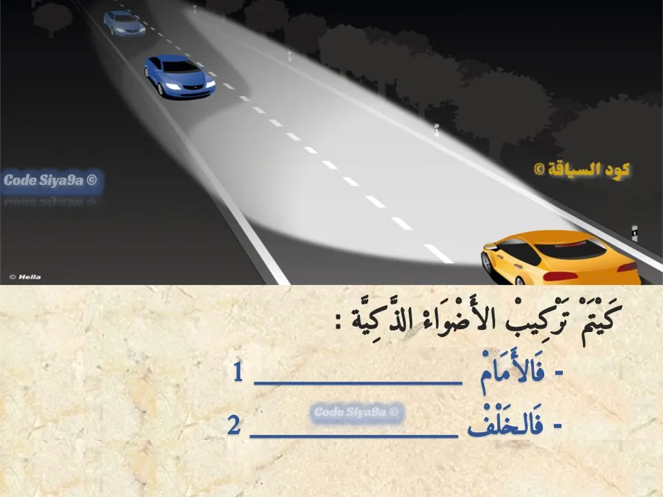
بيّن الجواب
الجواب الصحيح: 1
كيتم تركيب الاضواء الذكيه او الاضواء المكيفه في الامام ديال المركبه.
السؤال 20
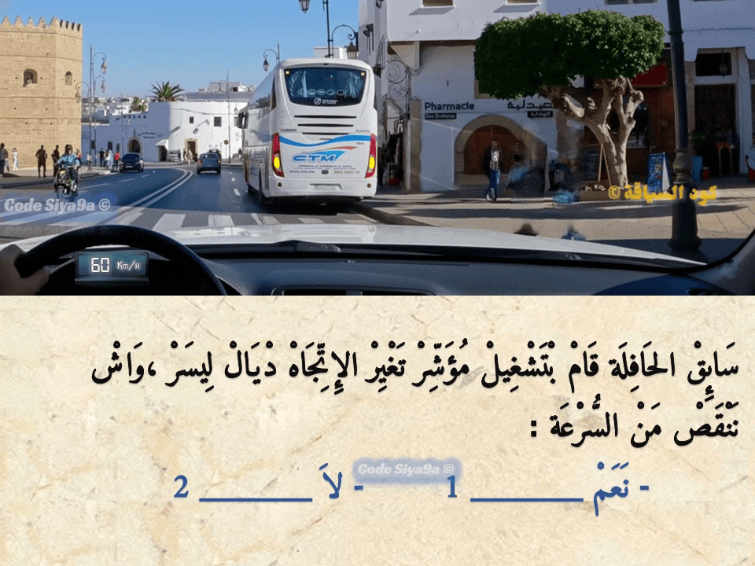
بيّن الجواب
الجواب الصحيح: 1
في هذه الحاله السائق الحافله قام بتشغيل مؤشر تشغيل الاتجاه ديال اليسار يعني انه غادي ينطلق. في هذه الحاله نقص من السرعه باش نسهل الاندماج دياله في الطريق
السؤال 21
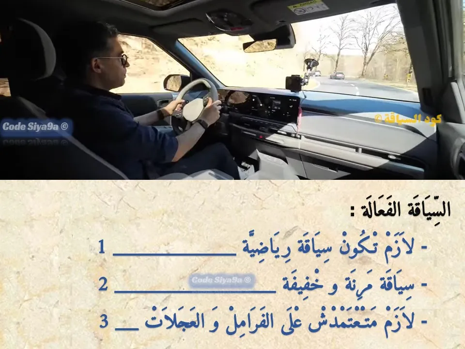
بيّن الجواب
الجواب الصحيح: 2 و 3
سياقه جيده او الفعاله هي السياقه اللي تكون مرينه وخفيفه كيكون فيها السائق نتحكم في الاعصاب دياله. كيغير المستويات السرعه في الوقت المناسب.
وكيمشي بسرعه القانونيه. بهذه الطريقه السائق يحافظ على صلاحيه المركبه دياله لمده اطول. وكينقص استهلاك الوقود.
السؤال 22
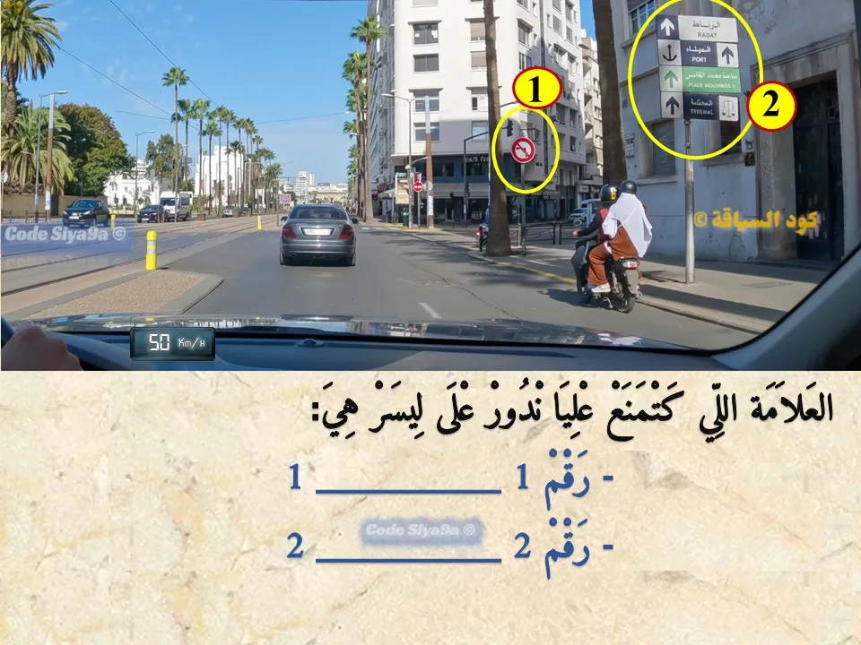
بيّن الجواب
الجواب الصحيح: 1
ـ العلامه رقم واحد هي علامه ديال المنع كاتمنع الانعطاف الى اليسار.
العلامه رقم اثنان هي علامه ديال التاكيد الاتجاه كاتاكد لي الاتجاه اللي خاصني نتبع باش نوصل للوجهه ديالي.
تالي العلامه اللي كاتمنع علي ندور على اليسار هي العلامه رقم واحد.
السؤال 23
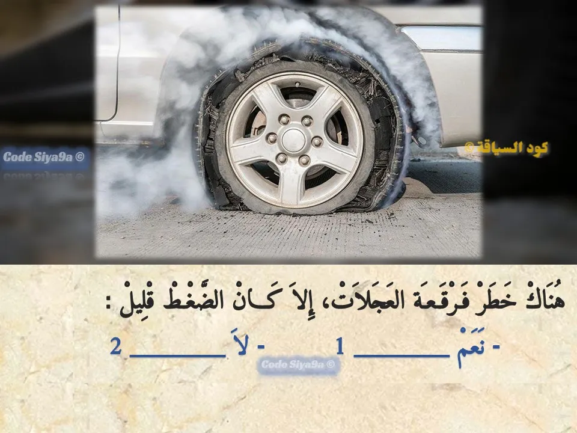
بيّن الجواب
الجواب الصحيح: 1
في حاله كان الضغط الهوائي قليل ديال العجلات هذا الشيء ممكن يؤدي الانفجار الاطار وبالتالي فرقعه العجلات
السؤال 24
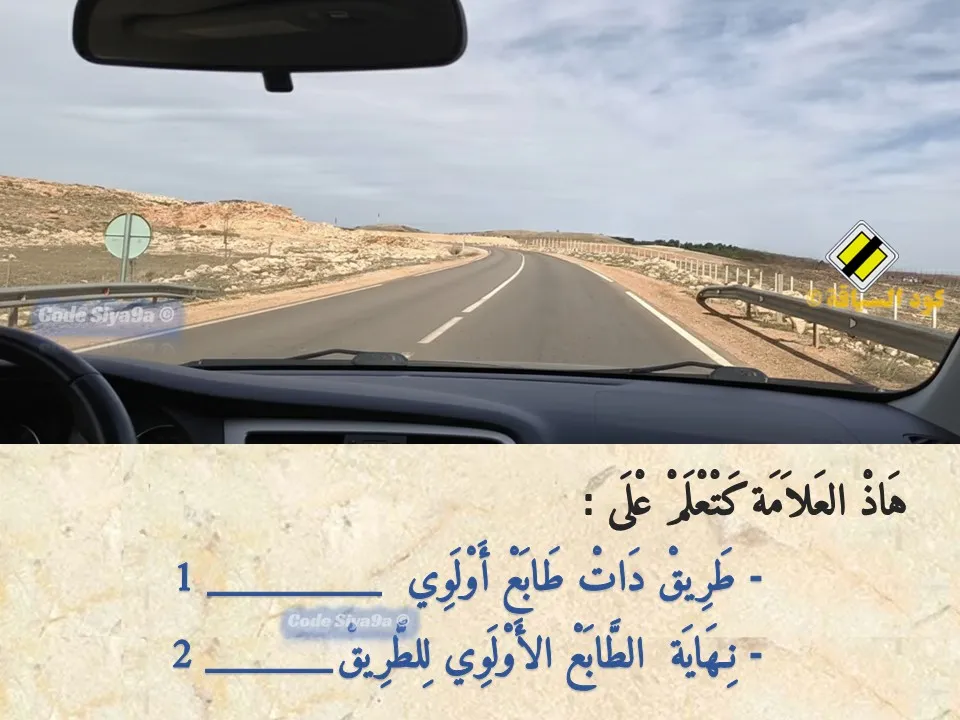
بيّن الجواب
الجواب الصحيح: 2
هذا العلامه هي علامات نهايه الطابع الاولوي للطريق.
كتعلن هذه العلامه على نهايه الطابع الاولوي للطريقاللي انا غادي فيها.
من الواجب علي ننقص من السرعه عند ملتقى الطرق ونشد لي من ديالي ونحترم مسافه الامان.
السؤال 25
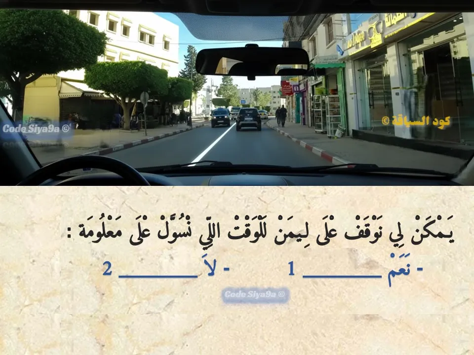
بيّن الجواب
الجواب الصحيح: 2
في هذا الحالة السير في الاتجاهين. و التجاوز ممنوع .
الا توقفت في في هذا المكان غادي نتسبب في عرقلة حركة السير .
السؤال 26
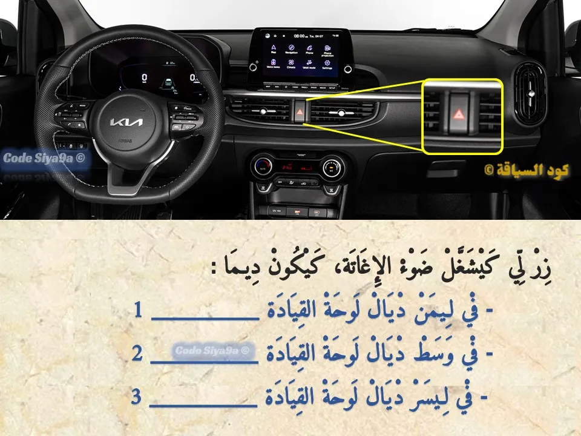
بيّن الجواب
الجواب الصحيح: 2
الزر لي كيمكن من تشغيل ضوء الإغاثة ، كيكون ديما في وسط ديال لوحة القيادة.
السؤال 27
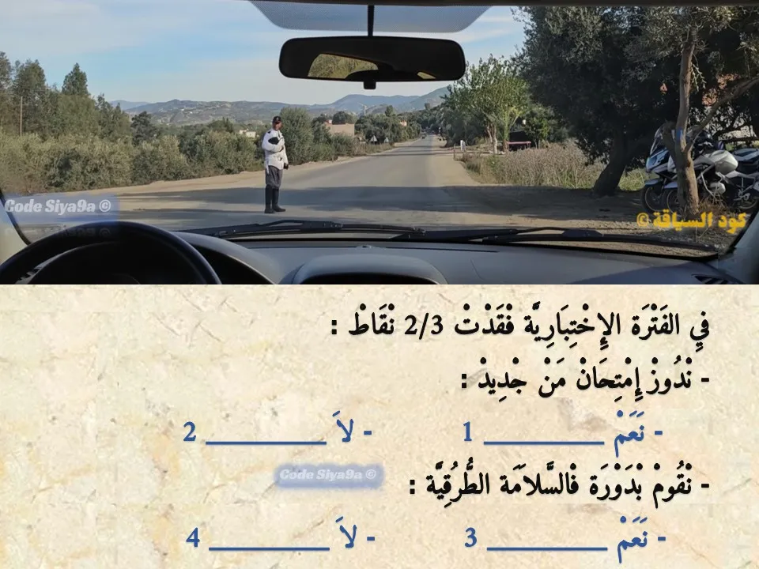
بيّن الجواب
الجواب الصحيح: 2 و 3
- في حالة فقدان اكثر من ثلثي نقاط رخصة السياقة. يجب على صاحب رخصة السياقة ، الذي فقد خلال الفترة الأختبارية اكثر من ثلثي النقد المخصص لرخصته المذكورة ان يخضع لدورة في التربية على السلامة الطرقية تحدد كيفيلتها من قبل الإدارة .
- اما في حالة فقد السائق جميع النقط فيمكنه إعادة اجتياز الامتحان من جديد بعد اجل 6 اشهر من تسليم رخصة السياقة.
السؤال 28
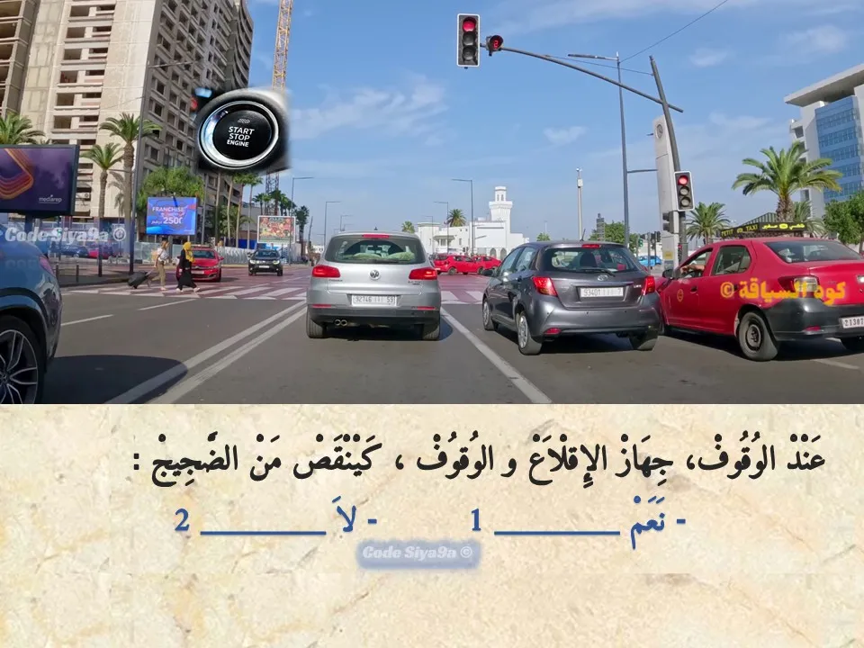
بيّن الجواب
الجواب الصحيح: 1
جهاز الاقلاع و الوقوف "start stop" كيمكن من توقيف المحرك تلقائيا عند التوقف لمدة طويلة .
و بالتالي كيساهم في تقليل من الثلوث و الضجيج .
السؤال 29
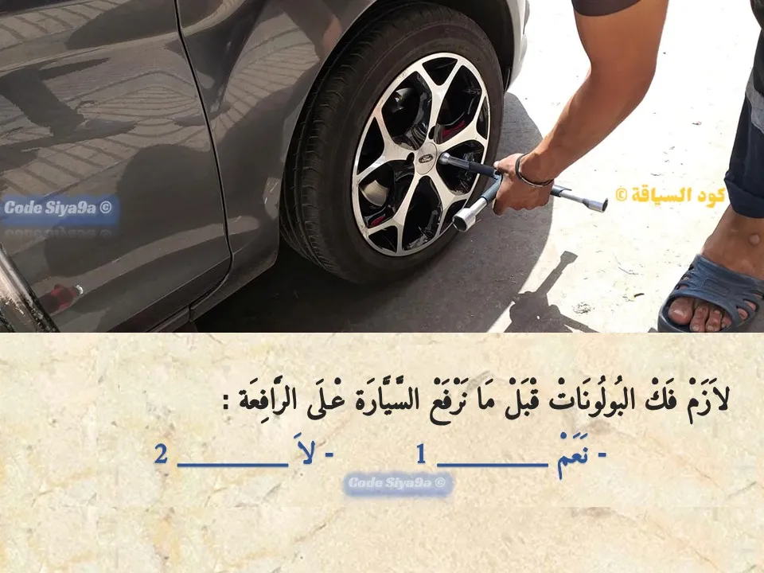
بيّن الجواب
الجواب الصحيح: 1
قبل من نرفع السيارة على الرافعة . لازم نقوم بفك البولونات .
- فك البولونات جزئيا باش يسهل عليا نكمل الفك ديالهم كليا من بعد الرفع.
- فك البولونات جزئيا كيمكن باش نرفع السيارة بامان . باش نضمن في حالة خلل او عدم ثباث الرافعة باش السيارة تكون عندها داعمة تمنعها من الوقوع على الارض .
السؤال 30
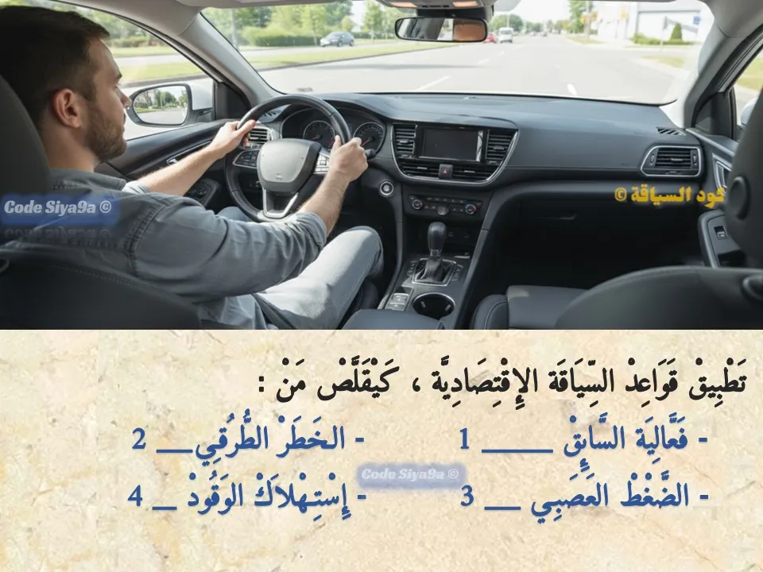
بيّن الجواب
الجواب الصحيح: 2 و 3 و 4
تطبيق القواعد السياقه الاقتصاديه كاتمكن من تقليص الخطر الطلقي الضغط العصبي استهلاك الوقود كما كتمكن من الحفاظ على الاجهزه الميكانيكيه للمركبه
السؤال 31
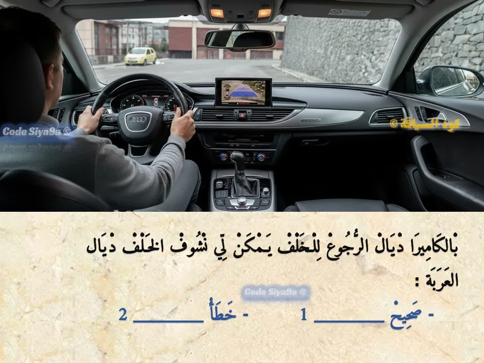
بيّن الجواب
الجواب الصحيح: 1
الكاميرا ديال رجوع للخلف كاتمكن باش نشوف للخلف ديال المركبه
السؤال 32
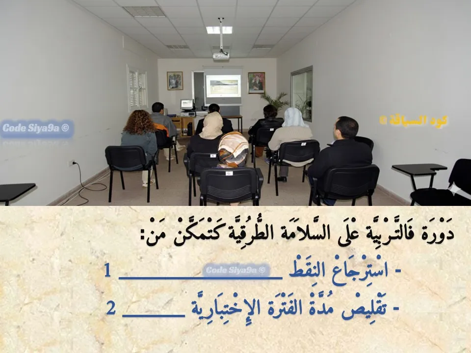
بيّن الجواب
الجواب الصحيح: 1
الخضوع الدوره التكوينيه في السلامه الطرقيه كاتمكن من استرجاع النقاط بعد خصم النقاط كل دوره تكوينيه كاتمكني من استرجاع اربعه ديال النقط .
السؤال 33
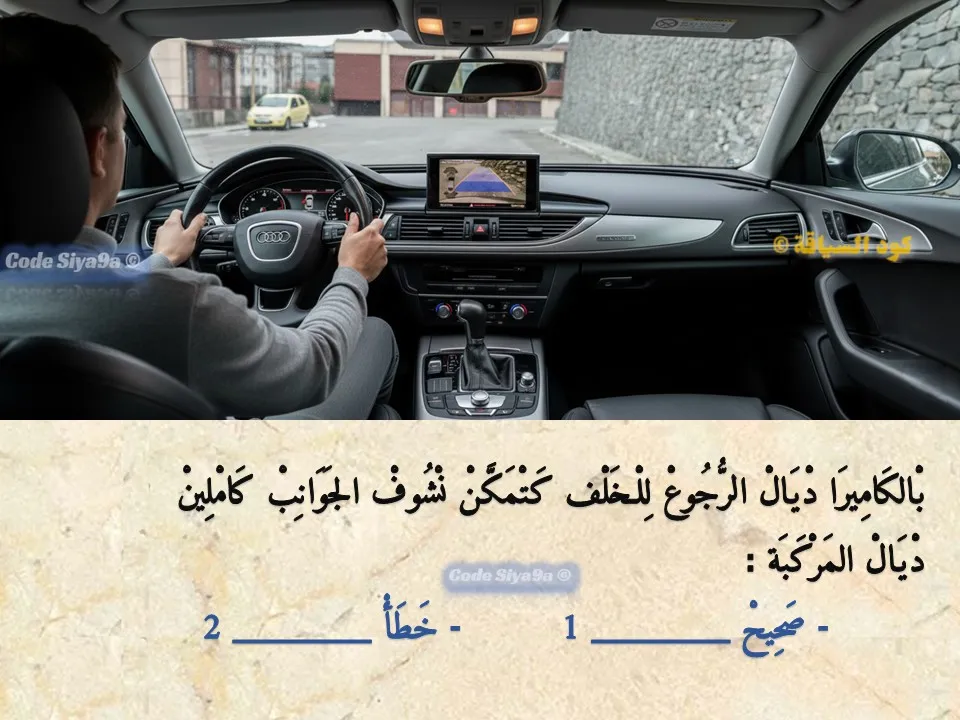
بيّن الجواب
الجواب الصحيح: 2
الكاميرا ديال الرجوع الخلف كاتمكني باش نشوف للخلف ديال المركبه فقط ما كانيش باش نشوف الجوانب كاملين ديال المركبه
السؤال 34
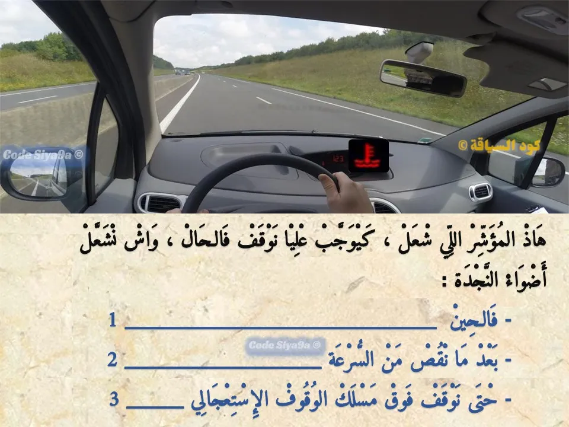
بيّن الجواب
الجواب الصحيح: 1
هذا المؤشر اللي شعل هو مؤشر ذو طابع استعجالي. كي نبهني باللي درجه حراره الماء المحرك ارتفعت بشكل كبير. كيتوجب علي الوقف الحال. باش نوقف لازم علي نوقف شريط ديال الوقوف الاستعجالي.
اول حاجه خاصني ندير هي نشعل اضواء النجده في الحين عاد ونحاز لجهه اليمين ونتوقف فوق شريط الوقوف الاستعجالي.
السؤال 35
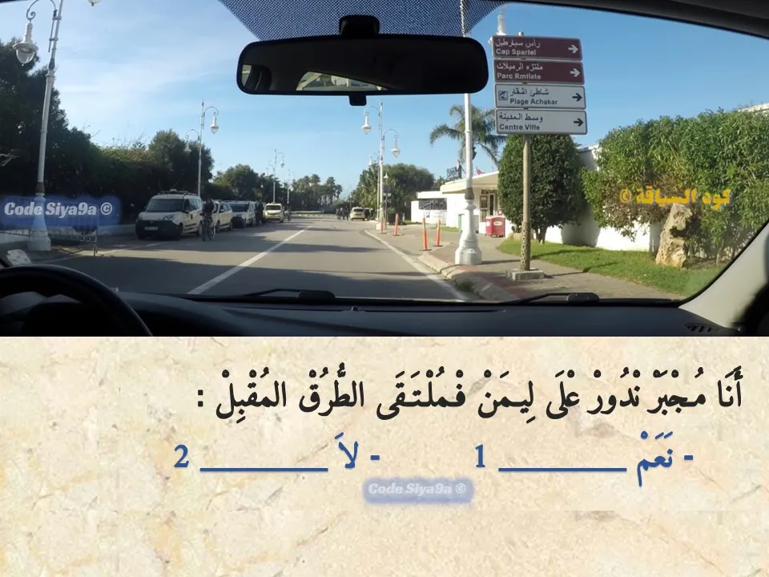
بيّن الجواب
الجواب الصحيح: 2
هذه العلامات هي علامات ديال الاتجاه، كتعلمني على الاتجاهات اللي غادي نتبع باش نمشي للوجهه ديالي، هذه العلامات ما كاتوجبش علي باش ندور على اليسار او ندور على اليمن او نكمل السير القدام
السؤال 36
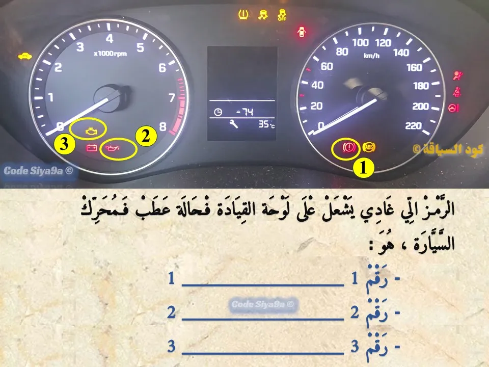
بيّن الجواب
الجواب الصحيح: 3
الرمز اللي غادي يشعل في حاله عطب في محرك السياره هو الرمز رقم ثلاثه.
هذا الرمزك لانه كاينه عطب في المحرك وبالتالي واجب علي الصيانه ديالو
السؤال 37
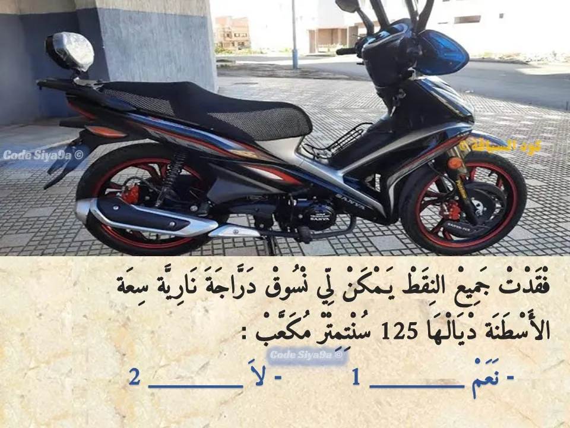
بيّن الجواب
الجواب الصحيح: 2
رخصه السياقه كاتكون عامه على جميع الاصناف . عندي رخصه السياقه وفقت النقاط فراح كتفقد على جميع الاصناف. في حاله فقد جميع النقاط غادي تلغى رخصه السياقه ديالي، وغادي تصبح غير صالحه.
باش نسوق دراجه ناريه سعه الاسطانه ديال عام 125 سم مكعب من الواجب انني متوفر على رخصه السياقه صالحه
السؤال 38
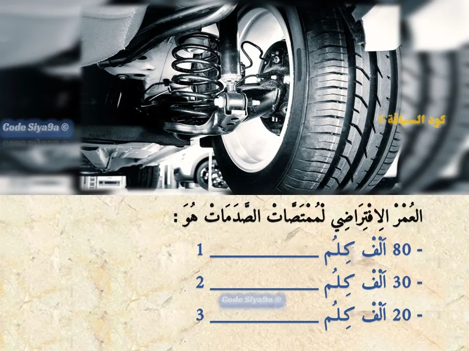
بيّن الجواب
الجواب الصحيح: 1
العمر الافتراضي الممتصدمات هو 80,000 كلم او خمس سنين من الاستعمال
السؤال 39
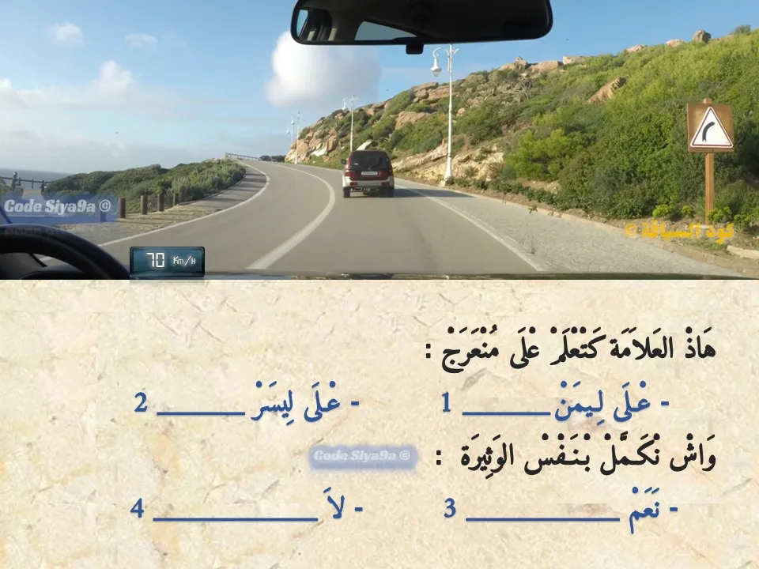
بيّن الجواب
الجواب الصحيح: 1 و 4
هذه العلامه كاتعلم على منعرج على اليمن على بعد 150 متر.
كنمشي ب 70 كلم في الساعه بهذه السرعه غادي يصعب علي باش ندوز في المنحرج ونتحكم في مسار المركبه. خاصني نقص من السرعه
السؤال 40
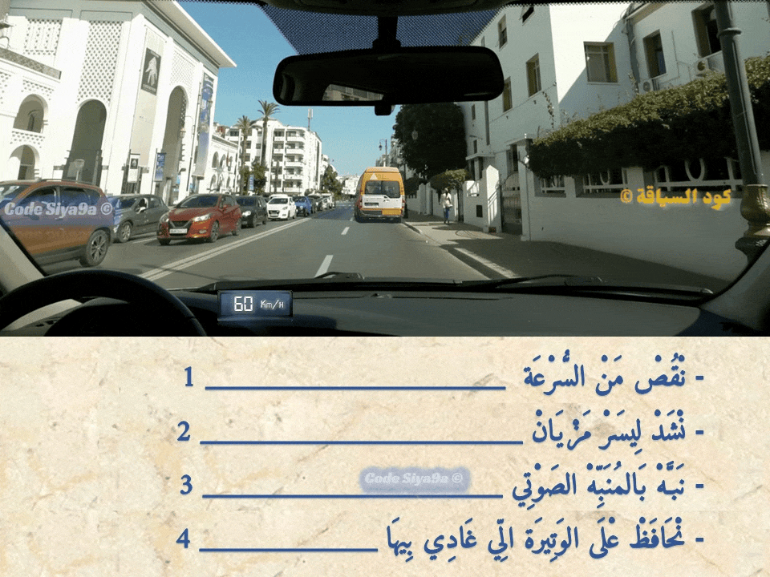
بيّن الجواب
الجواب الصحيح: 1 و 2
في هذه الحاله قدامي مركبة ديال النقل المدرسي . هذه المركبه كاتحمل الاطفال بالتالي نزول او الركوب ديالهم كايشكل خطر، من الواجب علي نقص من السرعه ونرد البال. وشد اليسار مزيان باش نتفاد اي شيء غير متوقع.